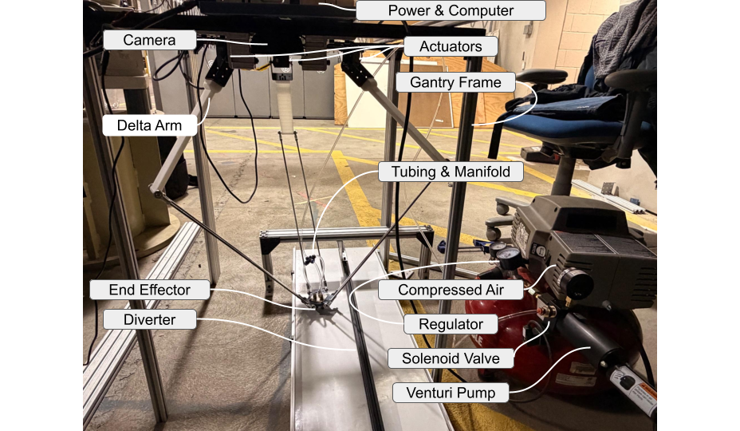

Real-Time Conveyor-Belt Object Detection and Robotic Sorting
A final mechatronics system that used cloud-assisted vision, homography calibration, and a delta robot with a vacuum end effector to separate aluminum cans from plastic bottles on a moving conveyor.
Overview
The final system focused on positive sorting of aluminum cans from plastic bottles on a moving conveyor. The key challenge was not just recognizing the objects, but timing a real pick-and-place action accurately enough for a fast delta robot to remove cans while bottles continued down the belt.
Project site: CMU Mechatronics Team 3.
Implementation
The final architecture used a Raspberry Pi as the onboard controller for camera capture, homography-based position estimation, inverse kinematics, motion scheduling, and coordination with the robot and vacuum subsystems. A single overhead USB webcam captured the conveyor scene, and frames were sent to a Roboflow hosted segmentation workflow for object classification and centroid extraction.
Returned detections were transformed into robot-plane coordinates with a calibrated homography, then passed into the inverse kinematics solver for the three-servo delta arm. The end effector used a lightweight three-suction-cup vacuum gripper driven by a venturi vacuum generator, solenoid switching circuit, and auxiliary microcontroller. Because inference ran through the Roboflow API, the pickup logic also included empirical timing compensation for conveyor motion during perception and communication latency.
Results
The final system achieved approximately 99% practical classification and centroid accuracy under controlled test conditions, and up to about 50% physical sorting accuracy in full closed-loop operation. That split was the central lesson of the project: perception and coordinate mapping became highly reliable, but real sorting consistency was limited by API latency, conveyor-speed variation, arm-link bending, and object motion after detection.
In other words, the final product worked as a complete robotic sorting system, but its weakest point was timing consistency rather than raw object recognition.
What I Built
- Integrated perception, calibration, inverse kinematics, and actuation into a single closed-loop sorting stack.
- Homography-based mapping from image coordinates to robot-plane pick locations.
- Timing compensation logic to account for cloud-inference and communication delay on a moving conveyor.
- Delta-arm and vacuum-end-effector integration for positive sorting of aluminum cans.
- System-level tuning and debugging across camera distortion, conveyor timing, linkage bending, and grasp reliability.
Project Media
Final Takeaways
